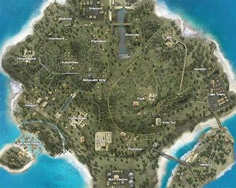
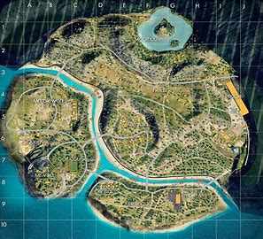
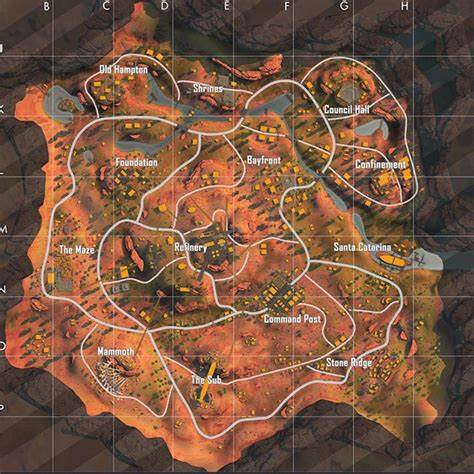

Bem vindo ao meu site de Free Fire
Esse é um site sobre o jogo Free Fire, aqui você ira encontrar algumas coisas sobre o jogo, como: Personagens, Mapas, entre outras coisas.
sobre o jogo
Free Fire é um jogo de celular e pc do gênero Battle Royale, o jogo é dividido em alguns modos de jogo, entre esses modos o principal modo de jogo é o Battle Royale Rankeado que consiste em 50 jogadores cairem no mapa e encontrarem armas dentro de casas e tentar ser o ultimo jogador vivo. Você tambem pode jogar esse modo de jogo em dupla, e em squad(esquadrão).
Mapas
No free fire nós temos alguns mapas para se jogar, o mais famoso é o mapa Bermuda.
Tambem temos o mapa Purgatorio
e o mapa kalahari
Esses são os 3 principais mapas e mais jogados do Free Fire.
Personagens
Os personagens são os bonecos que os jogadores utilizam para jogar o jogo. No Free Fire cada personagem tem uma habilidade diferente, como por exemplo a habilidade de correr mais rapido da personagem kelly ou então usar kits medicos mais rapidamente como o personagem Maxim.
Esses são todos os personagens do Free Fire; *Primis *nulla *Alok *chrono(CR7) *Tatsuya *Andrew *kelly *Maxim *Ford *Olivia *Nikita *Misha *Santino *Kla *Paloma *Miguel *Caroline *Antonio *Wukong *Laura *Hayato *Rafael *A124 *Shani *Alvaro *Jota *Evelyn *Luqueta *Wolfrahh *Kamir *Shiro *Maro *D-Boas *Thiva *Dimitri *leon *Otho *Nairi *Xtrema *Anitta *Iris *Luna *Justin Bieber *Orion *Sônia *Suzy *Ignis *Ryden *Kassie *Lila *Skiler *Moco *Kairos *Homero *Kenta *Diana *Kapella *Steffie *Notora *Joseph.